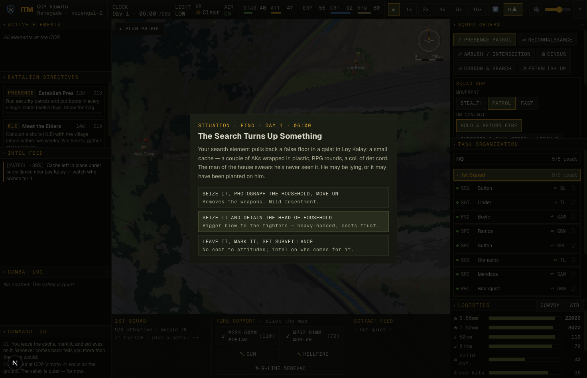
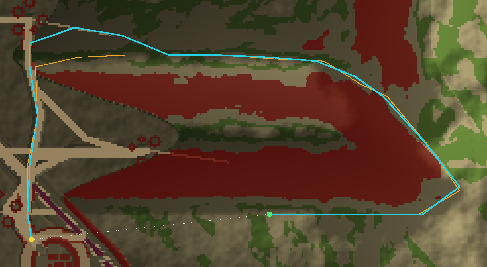

Development log · 2026-06-08
Soldier-Scale Realism — three felt wins, one honest revert
The player now watches this counterinsurgency sim at the soldier scale — and at that scale four things "didn't feel right." Each was turned into a number before it was touched. Two shipped as large measured wins, one shipped as a quieter one, and the fourth — the hardest — was built, measured against its own baseline, found to regress the most load-bearing system in the codebase, and reverted. The revert is in here on purpose: an honest logbook is part of the product.
Item 1 — Village dwell was ~70× too short, and the census teleported
shipped The complaint, as a number
A cordon-and-search is a half-day operation; a census enrolls a village person by person. In the sim,
every on-station dwell was minutes — and the census flipped to "done" the very tick the squad
arrived. A headless probe (scripts/dwell-probe.ts) read it off HEAD: census 300 s, with the
"done" flag set at 0 s on arrival — a teleported state flip, not work.
| mission | before | after | doctrine band |
|---|---|---|---|
| presence | 180 s | 3,600 s (1 h) | ~1 h flag-showing |
| recon | 150 s | 4,500 s (1.25 h) | ≥ 1 h |
| ambush | 1,100 s | 14,400 s (4 h) | hours of waiting |
| census | 300 s, INSTANT | 11,200 s, PROGRESSIVE | 2–8 h, population-driven |
| cordon | 300 s | 7,700 s (2.1 h) | 2–8 h half-day |
| overwatch | 900 s | 18,000 s (5 h) | 3–8 h (24 h cap) |
| KLE / shura | 360 s | 5,856 s (1.6 h) | 1–2 h per meeting |
Why "×70 the numbers" would have been worse — and what was done instead
A static six-hour wait at 4× speed is more tedious than a five-minute one, not less. The fix is four coupled changes, not one knob:
- Population-driven duration. Census/cordon scale with
village.population(biometric enrollment is up to 30 min per fighting-age person), clamped to a 2–8 h band. Every continuous on-station payoff (e.g. a shura's+8attitude) was re-normalised by the dwell, so raising the duration doesn't secretly multiply the gains. - Progressive census. A new
censusProgress(0→1) climbs with time on station; "done" trips only at 1. Recall the squad early and the census is partial — and it persists, so a follow-up element pays only the remaining time. - A dwell event-roll. The patient hours surface decisions: a weapons cache turns up under a false floor, an enrolled man pings the biometric watch-list, the Female-Engagement-Team gap blocks the women's quarters, a herder demands solatia for a shot goat (the Restrepo "Cow Incident"), a man bolts the cordon. Each is a modal the engine already knows how to pause time on.
- Warp is the intended way through. The skip-to-event warp loop already halts on a pending modal — so the player fast-forwards the patient hours and is yanked back the instant something matters. Long-but-real becomes tension, not a progress bar.

SITUATION · FIND · DAY 1 · 06:00 — verified end-to-end: choosing "leave it under surveillance"
cleared the modal and logged the correct cache-watch intel. Every choice handler was exercised headlessly;
an anti-repeat guard stops a long census drawing the same grievance twice.Item 2 — The squad sat on a base of fire while one man shuffled
shipped The complaint, as a number
The owner watched a firefight and saw the whole squad go to ground and stay there — at most a man or two
repositioning, never a maneuver element. A probe (scripts/squad-maneuver-probe.ts) confirmed it
on HEAD and found three damning facts: under the default Hold drill the squad never
autonomously assaulted; the squad's standing order (SOP) was cosmetic — Hold, Suppress and
Assault all spent ~45% of contact breaking contact and behaved almost identically; and even under an
explicit Assault order, bounding discipline was 0% (the whole maneuver team rushed at once)
along a route whose flank-cover ratio was 0.92 — i.e. it charged through less cover
than a straight line. A frontal banzai rush into the open.
| metric (heat 0.45) | Hold before→after | Suppress | Assault |
|---|---|---|---|
| enters an assault | 0% | 0% | 46% (frontal) |
| enters an assault | → 22% | → 10% | → 29% (bounding) |
| bounding discipline | — | — | 0% |
| bounding discipline | → 100% | → 100% | → 100% |
| flank-cover ratio (when flanking) | 0.92 → 1.68–1.84 (route cover ÷ straight-line cover; >1 = a covered flank) | ||
The fix gives the maneuver decision to the squad-leader AI — never to the player, who still only sets the SOP and approves fires (that is the game's soul: "combat is 100% AI; the hardest part of command is watching"). Four mechanisms:
- Develop-then-commit. React to contact = get down and return fire; a beat later, the moment the squad can gain fire superiority, the leader commits a maneuver fire team — unbidden.
- The SOP becomes a real lever via a develop-timer. An earlier attempt to key the lever on how-pinned-the-squad-is failed: that signal is bimodal (either winning or pinned), so it rarely lands between thresholds and Hold ≈ Assault. The robust fix is time: Assault commits at once, Hold develops ~7 s first, Suppress ~18 s and meanwhile calls fires — so many contacts resolve before the cautious orders ever assault. Now Assault > Hold > Suppress at every heat.
- A covered flank, not a beeline. The maneuver element routes to a flank objective off the enemy's axis via the cover-biased planner; frontal is the fallback only when no covered flank exists.
- Bounding overwatch. The element splits into buddy pairs and only one pair rushes at a time while the other overwatches — the single most recognisable infantry behavior, and it was entirely absent before.

balance.ts) held:
KIA stayed flat (the flank trades exposure for cover), and no individual-soldier micro was added.Item 4 — The squad rings the spur instead of climbing it
tried · measured · reverted Why this section exists
This is the part most reports leave out. A squad ordered to a peak observation post planned a 3.2 km route around a 468 m climb — it ringed the spur instead of switchbacking up the face. The cause was clear and the fix was textbook (anisotropic walking cost so a traverse is cheaper than a straight climb, plus softening the hard cliff cutoff). It was built. And then the numbers said: don't ship it.
A fair probe (scripts/op-route-probe.ts) measured the detour against a fixed
objective — the highest peak reachable under the strict cutoff, identical before and after — comparing the
live tree to a clean checkout of HEAD in a git worktree:
| attempt | mean detour | verdict |
|---|---|---|
| HEAD baseline | ×3.78 | the problem |
| anisotropic Tobler cost alone | ×4.52 | worse — over-penalises, pathological zig-zag |
| directional cost (right magnitude) + turn penalty | ×3.13 | better detour, +5pp reachability… but stalled a squad |
| REVERTED to baseline | ×3.78 | 0 movement stalls — clean |
The reason it was reverted. The best attempt improved the detour and made two more villages reachable — but a 12-deployment movement sweep found a new stall: on one seed a squad froze on flat ground, a re-path interaction the route change exposed. The remaining detour was also real: 45% of the worst seed's direct line is genuine cliff and river that no cost change makes climbable. A modest, below-target win that regresses the most load-bearing, hard-won system in the codebase is the wrong trade. The repo's own doctrine names this exact moment: "if anisotropic-cost-on-the-existing-grid thrashes, that's the signal to do the finer-patch / any-angle planner as a rebuild, not more patches."

docs/issues/019. The fair probe that proved all this is kept for that rebuild.The micro-terrain half of the same foundation — letting a soldier take cover behind that rock or
low wall, not an averaged 5 m cover cell — is scoped alongside it as docs/issues/020; the flank
work above already showed why it matters (a meaningfully-covered flank exists only 3–7% of the time on the
coarse cover raster, even though the flank mechanism itself is proven).
How it was verified
- Every complaint became a number before any code changed — three purpose-built headless
probes (
dwell-probe,squad-maneuver-probe,op-route-probe), each baselined on HEAD first. - Before/after on identical inputs. Where a change altered reachability (so the probe's own objective would move), the comparison was run against a clean checkout of HEAD in a git worktree, on a fixed objective selected by a mover-faithful flood that honours the planner's anti-corner-cut rule.
- Held-out seeds. The maneuver and OP wins were read on seeds that were never in the tuning loop, not just the ones tuned on.
- Live, in the deployed game. Both shipped items were driven in the real app via
window.__ITM— the dwell modal rendered and resolved correctly; the squad was caught mid-flank and its element split dumped frame-by-frame. - The standing gate held green:
tsc,build,smoke(serialize round-trip), andbalance(no stall) on every shipped change; new persisted state went into bothserialize()andloadWorld()(a save-version bump to v7).
Did an AI really do this? The interesting evidence isn't the code — it's the third item. An agent built a plausible, doctrine-correct fix, measured it against its own baseline on held-out seeds, found it traded a below-target gain for a movement-system regression, and reverted its own work — then wrote the reason down as two tracked issues and a reproduction probe for whoever builds the rebuild. The wins are nice; the revert is the tell.
Engineering record: docs/progress/2026-06-07-soldier-scale-impl/ (baselines,
after-numbers, live dumps). Deferred work: docs/issues/019 (any-angle OP planner),
docs/issues/020 (micro-terrain cover objects). Probes:
scripts/{dwell,squad-maneuver,op-route}-probe.ts. Built and verified by an autonomous agent;
numbers are quoted as measured.